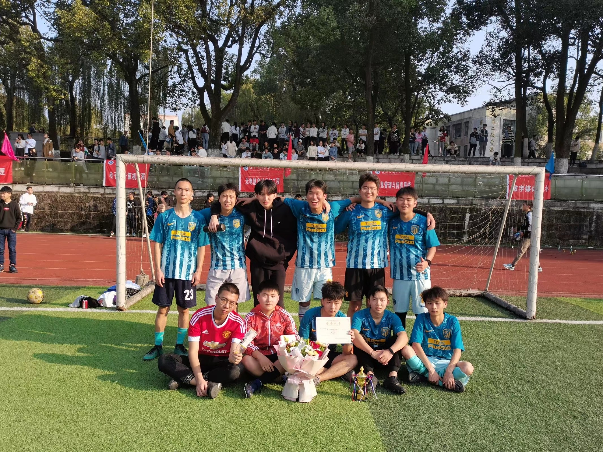
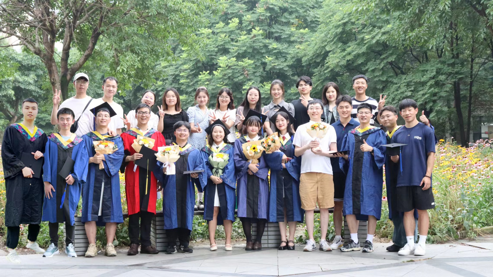
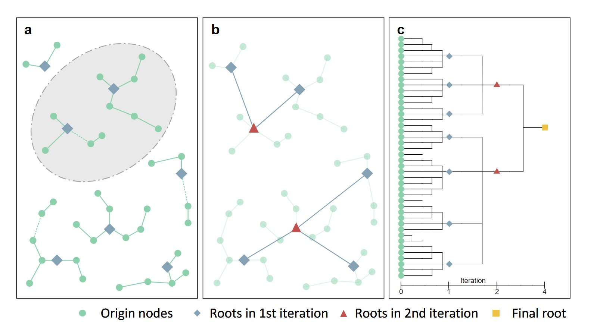
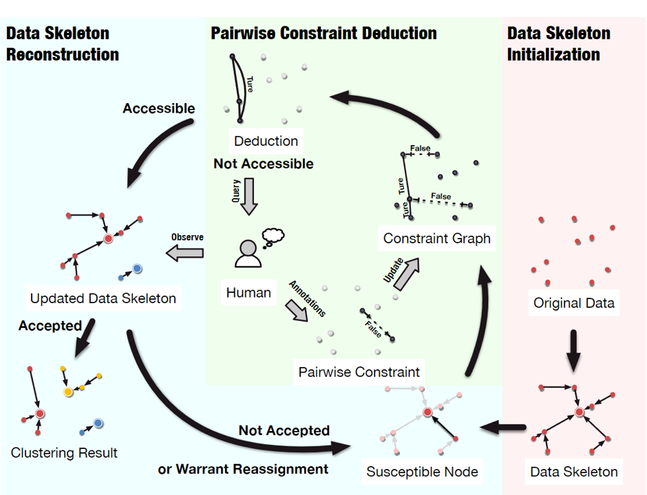
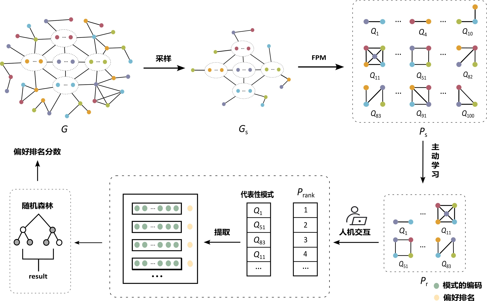

I am Xun Fu, a graduate student specializing in large-scale data mining and machine learning. My work focuses on developing scalable clustering, active and semi-supervised learning, human-machine interaction, and neural network.
My research has been published in various international conferences and journals. My goal is to develop advanced algorithms that address practical challenges in data mining and machine learning.
Email: fuxun0529@163.com
Phone: +86 17381369260


Accepted
2024: Xun Fu, Wen-Bo Xie*, Bin Chen, Tao Deng, Tian Zou, Xin Wang, "ACDM: An Effective and Scalable Active Clustering with Pairwise Constraint","Proceedings of the 32nd ACM International Conference on Information and Knowledge Management (ACM CIKM)".
2024: Wen-Bo Xie*, Bin Chen, Xun Fu, Jun-Hao Shi, Yan-Li Lee, Xin Wang, "Cost-effective hierarchical clustering with local density peak detection", Information Science.
2024: Bin Chen, Wen-bo Xie*, Xun Fu, Heng-ji Zhang, Xin Wang, "Density-based scalable hierarchical clustering", Journal of Nanjing University.
2023: Wen-Bo Xie*, Bin Chen, Jun-Hao Shi, Yan-Li Lee, Xin Wang, Xun Fu, "Cost-Effective Clustering by Aggregating Local Density Peaks", International Conference on Database Systems for Advanced Applications (DASFAA).
2025：Lu Wang, Xun Fu, Ling-Zhen Shen, Xing Jiang, Xin Wang*, "Pattern interestingness evaluation based on active learning", Journal of Nanjing University.
Under Review
Xun Fu, XinWang*, "XXX", ACM SIGKDD.
Xun Fu, Wen-Bo Xie*, Tao Deng, Tian Zou, Xin Wang, "An Active Constrained Clustering Aims to Improve the Clustering Quality and the Scalability", IEEE Transactions on Knowledge and Data Engineering.
Wen-Bo Xie, Xun Fu*, Bin Chen, Yan-Li Lee, Tao Deng, Tian Zou, Xin Wang, Zhen Liu, Jaideep Srivastava, "Data Skeleton Learning: Scalable Active Clustering with Sparse Graph Structures", Pattern Recognition.
Education
Master in Computer Science and Technology (09-2022 to 06-2025 expected)
Southwest Petroleum University, GPA: 3.89/5.00 (88.9/100.0)
Dissertation: Active Clustering Method for Large Scale Data
Advisors:
Bachelor in Electrical and Computer Engineering (09-2018 to 06-2022)
Southwest Petroleum University, GPA: 4.01/5.00 (90.1/100.0)
Honor: Excellent graduates from Sichuan Province
Honor: Postgraduate Recommendation
Location of where I am studying in (Google Map)
Research Experience
A demonstration of my developed application of active clustering (youtube)
Hierarchical Clustering for Large-Scale Data
Timeline: 10/2022-08/2023
Advisors: Assistant Professor Wen-Bo Xie and Professor Xin Wang.
Focus: Exploring hierarchical clustering methods to handle large datasets efficiently and effectively.
Abstract: Hierarchical clustering plays a crucial role in real-world knowledge discovery and data mining applications. This powerful technique provides tree-shaped results that are typically considered data summaries. However, achieving well-organized outputs requires a challenging trade-off between computational complexity (both in time and space) and clustering accuracy, especially in big data scenarios. To address this challenge, we propose a novel agglomerative algorithm for hierarchical clustering. Our algorithm constructs tree-shaped subclusters using a nearest-neighbor chain search. Next, the proxy (root) for each subcluster is identified using a local density peak detection mechanism, which guides the subsequent aggregation. Additionally, we propose a non-parametric variant to facilitate the easy implementation of the algorithm in real-world applications. Comprehensive experimental studies on fourteen real-world and synthetic datasets demonstrate that our algorithm surpasses other benchmarks in terms of clustering accuracy, response time, and memory footprint in most cases. Notably, our proposed algorithm can handle up to two million data points on a personal computer, further verifying its cost-effectiveness.
Result: Accepted by DASFAA and Information Science journal.

Dynamic Constraint Selection for Active Clustering
Timeline: 04/2023-04/2024
Advisors: Assistance Professor Wen-Bo Xie and Professor Xin Wang.
Focus: Enhancing active clustering algorithms through dynamic constraint selection to improve adaptability and precision.
Abstract: Clustering is fundamentally a subjective task: a single dataset can be validly clustered in various ways, and without further information, clustering systems cannot determine the appropriate clustering to perform. This underscores the importance of integrating constraints into clustering, enabling users to convey their preferences to the system. Active constraint-based clustering approaches prioritize the identification of the most valuable constraints to inquire about, striving to achieve effective clustering with the minimal number of constraints needed. We propose an Active Clustering with Diffusion Model (ACDM). ACDM applies the nearest-neighbor technique to construct a diffusion graph, and utilizes an online framework to refine the clustering result iteratively. In each iteration, (a) nodes with high uncertainty and representativeness are selected in batch mode, (b) then a novel neighborhood-set-based query is used for categorizing the selected nodes, using pairwise constraints, and (c) the categorized nodes are used as source nodes in the diffusion model for cluster refinement. We experimentally demonstrate that ACDM outperforms the state of the art in terms of clustering quality as well as scalability.
Result: Accepted in CIKM 2024 and its extension is currently under review at the TKDE journal.
Automation of Constraint Annotation
Timeline: 11/2023-05/2024
Advisors: Assistance Professor Wen-Bo Xie and Professor Xin Wang.
Focus: Reducing manual intervention in clustering by automating constraint annotation processes.
Abstract: In this work, we focus on the efficiency and scalability of pairwise constraint-based active clustering, crucial for processing large-scale data in applications such as data mining, knowledge annotation, and AI model pre-training. Our goals are threefold: (1) to reduce computational costs for iterative clustering updates; (2) to enhance the impact of user-provided constraints to minimize annotation requirements for precise clustering; and (3) to cut down memory usage in practical deployments. To achieve these aims, we propose a graph-based active clustering algorithm that utilizes two sparse graphs: one for representing relationships between data (our proposed data skeleton) and another for updating this data skeleton. These two graphs work in concert, enabling the refinement of connected subgraphs within the data skeleton to create nested clusters. Our empirical analysis confirms that the proposed algorithm consistently facilitates more accurate clustering with dramatically less input of user-provided constraints, and outperforms its counterparts in terms of computational performance and scalability while maintaining robustness across various distance metrics.
Result: Under review in Pattern Recognition (minor revision).

Evaluation of Pattern Interestingness
Timeline: 11/2023-07/2024
Advisor: Professor Xin Wang.
Focus: Assessing the interestingness of graph patterns with human-machine interaction.
Abstract: Frequent Pattern Mining (FPM) is one of the core problems in graph data analysis and mining, aiming to discover patterns with support levels not lower than a specified threshold from large-scale graph data. Traditional frequent pattern mining algorithms rely on support for pruning, and the returned results often contain a large number of "redundant" patterns; Although top-k pattern mining algorithms only return k frequent patterns, they mainly evaluate patterns based on "objective" indicators such as support, making it difficult to fully reflect users' subjective interests and preferences. In response to the above issues, this paper proposes a Pattern Interest Evaluation with Active Learning (PIEAL) method based on active learning. This method uses an active learning strategy to select representative patterns from the frequent patterns mined from the sampling graph, and collects user preferences for these patterns through limited human-computer interactions. It then predicts the interest scores of the patterns and guides the algorithm to discover patterns that interest the user. In the human-computer interaction process, PIEAL adopts a pairwise comparison based strategy to collect user preference feedback on patterns, effectively reducing the difficulty of subjective evaluation by users. The experimental results on real datasets show that PIEAL only requires a small amount of human-computer interaction to discover patterns that users are interested in, and its test set accuracy can reach up to 95 percent.
Result: Accepted by the Journal of Nanjing University and its extension research is working on DASFAA.

Scalability and Quality Optimization in Constrained Clustering
Timeline: 05/2024-08/2024
Advisor: Assistance Professor Wen-Bo Xie and Professor Xin Wang.
Focus: Developing methodologies to enhance the scalability and quality of clustering frameworks through efficient constraint selection.
Abstract: Confidential
Result: Working on SIGKDD 2025.
Skills
Programming Languages: Python, Java, C++, Matlab, R
Languages: Chinese (Native), English (IELTS: 6.5), Russian (Intermediate)
Information Technology Specialist (06/2021 to 09/2021)
Industrial and Commercial Bank of China (ICBC), Chengdu China
Managed data security and performance optimizations for the bank's large-scale data warehouse systems.
Teaching Assistant in Big Data Analysis (09/2020 to 01/2021)
Southwest Petroleum University, Chengdu China
Assisted in teaching and grading for undergraduate students in Big Data Analysis.
Web Developer (06/2020 to 09/2020)
Sichuan Aoyi Media Advertising Co. Ltd., Chengdu China
Implemented visual designs into live environments, enhancing user interactions and functionality.